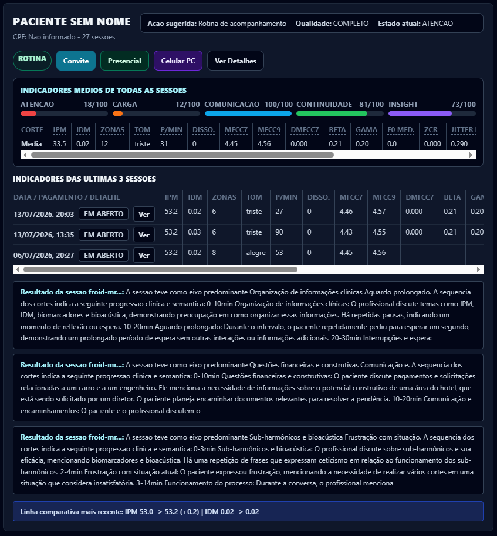
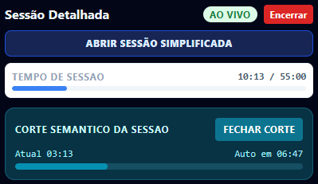

FROID Psique
Medidas vocais, registros de movimentos faciais e transcrição apoiam a revisão da sessão. A observação é do sistema; o significado clínico é construído pelo profissional.
Tecnologia a serviço do cuidado
Na clínica, informação organizada para apoiar a observação do profissional. Nas organizações, um caminho estruturado para acompanhar condições de trabalho. Conheça os dois produtos FROID e escolha o que atende à sua necessidade.
Frequency Recognition of Internal Dynamics
Medidas vocais, registros de movimentos faciais e transcrição apoiam a revisão da sessão. A observação é do sistema; o significado clínico é construído pelo profissional.
Organize a avaliação de fatores psicossociais relacionados ao trabalho, a documentação e o acompanhamento de ações. Não é uma avaliação clínica dos trabalhadores.
Assim como um painel reúne informações para quem conduz, o FROID Psique organiza registros para quem atende. O painel informa; não escolhe a conduta.
O produto clínico apresenta 12 bandas acústicas e os índices vocais IPM e IDM, ao lado de sete famílias de padrões faciais. São canais separados: movimentos do rosto não multiplicam índices da voz nem demonstram conflito entre rosto e discurso.
Uma leitura vencida não continua representando o agora. Painel e relatório utilizam o mesmo motor de interpretação facial.
Quando não há condição de apuração, o sistema declara isso. Informação indisponível não é preenchida com zero.
O Data-Froid reúne a proposta de análise agregada, enquanto o FROID Explica ajuda a consultar conhecimento e medidas disponíveis.
Uma rede neural aprende padrões a partir de exemplos. Pense em camadas que transformam uma entrada em representações úteis — não em uma mente capaz de conhecer sentimentos. O FROID Explica usa recuperação de informação para apoiar respostas, que continuam sujeitas à conferência profissional.
Saiba o que é medido, o que é uma estimativa e o que ainda precisa de avaliação. Não prometemos diagnóstico automático ou identificação de emoções a partir de uma configuração facial.


Apresente sua rotina clínica ou o contexto de sua organização. A conversa começa pelo produto certo.